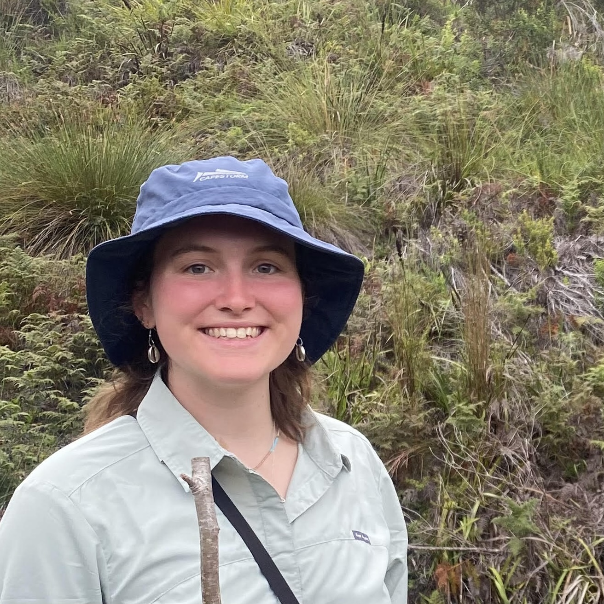
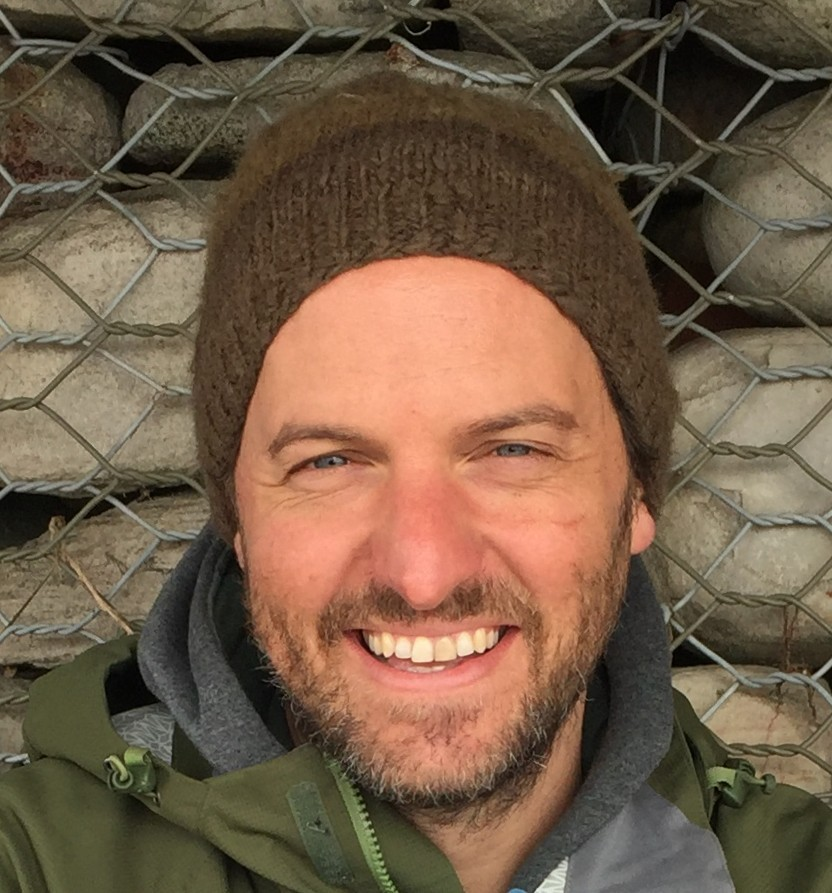

Welcome to the Plant Ecology Lab at the University of Cape Town!
Our mission is to improve our fundamental understanding of African ecosystems and translate that knowledge into tools to assist the management and conservation of their biodiversity and contributions to people.
Current Lab Members

Sarah Frances Visser
MSc candidate studying the demography of invasive pines within the Western Cape.

Tim Muthama
MSc candidate mapping and monitoring plant structural diversity using active remote sensing

Nicholas Limbert
MSc candidate exploring efficient fire spread modelling to simulate spatial burn scars and estimate burn probabilities.
Amour McCarthy
MSc candidate exploring the need for local knowledge in developing global data products to inform environmental management.

Ashleigh Smith
MSc candidate working on ecological condition mapping using the AVIRIS-NG imaging spectroscopy data collected during the NASA BioSCape Campaign
Simcelile Chenge
PhD candidate exploring the relationships between culm (~leaf) and canopy reflectance spectra and hydrological niche preferences in Restionaceae. Co-supervised by Adam West.
Hana Petersen
PhD candidate exploring the mechanisms by which climate change impacts plant community diversity across Mediterranean Climate Ecosystems. Co-supervised by Ryan Blanchard (SAEON).
Samukelisiwe Msweli
PhD candidate mapping landscape flammability in the Cape Floristic Region by linking flammability metrics from experimental burns with plant traits and trait maps from imaging spectroscopy.
Áine Nicholson
Áine is a visiting PhD candidate from Charles Darwin University working on ignition catchments and vegetation change in the Western Ghats. She’s supervised by Lindsay Hutley, Jayashree Ratnam and Mahesh Sankaran, and collaborating with Glenn Moncrieff and I.
Anabelle Cardoso
Postdoc (University at Buffalo and University of Cape Town)
Anabelle is the Science Team Manager for the NASA BioSCape Campaign

Jasper Slingsby
Principal Investigator
Following my PhD exploring the interface between ecology and evolution in the Cape Floristic Region, I worked at the Fynbos Node of the South African Environmental Observation Network for almost a decade, focusing on global change and long term ecological research in African ecosystems. My current research blends the two, following the ethos that understanding the origins of diversity is essential if we are to understand how ecosystems function, how they are being altered by global change, and how best to manage them for desirable outcomes.
Former Lab Members (incomplete list)
Kagiso Nhlapo
MSc candidate mapping hydrological refugia in the Cape Floristic Region. Co-supervised by Tony Verboom.
Cherie Forbes
Postdoc (University at Buffalo and University of Cape Town)
Cherie was the Applications Coordinator for the NASA BioSCape Campaign
Geethen Singh
Postdoc (University of Cape Town, Stellenbosch University & SAEON)
Geethen was mapping invasive species, fire scars and other related phenomena using satellite data and machine learning.